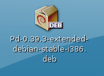
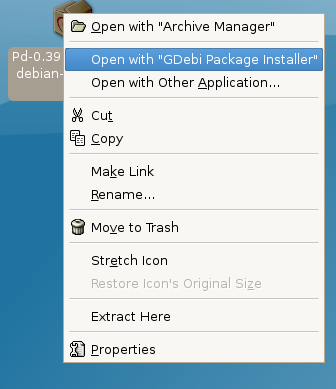
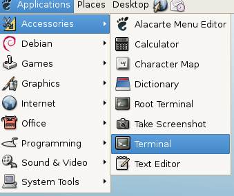

Installing on Debian
Software name : Pure Data Extended
Homepage : http://puredata.info
Software version used for this installation : Pd-Extended 0.39-3
Operating System use for this installation : Debian Linux (4.0 rc3 stable)
Recommended Hardware : 300 Mhz processor (CPU) minimum
To install Pure Data Extended, first visit the download page ( http://puredata.info/downloads ) :

In the very first section click on the link "Debian and Ubuntu (intel i386 processor)", this will forward you to a download page. Don't do anything else, the download should start automatically. If you used the default Debian web browser (Ice Weasel) you will see the following :

Don't use the archive manager, instead choose 'Save to Disk' and press 'OK'. When your file has downloaded you must browse to it. The default download location is the Desktop, on my Desktop I see this :

Right-click on this icon and choose 'Open with "GDebi Package Installer"':

This will show something like this :

This is the general package (software) installer for Debian. Just click "Install Package" and you will be asked for the administrator ('root') password for your computer :

Enter the password and the installation process will start :

When the process has completed just open a terminal :

Type in the terminal 'pd' and press return :

and now Pure Data should appear :